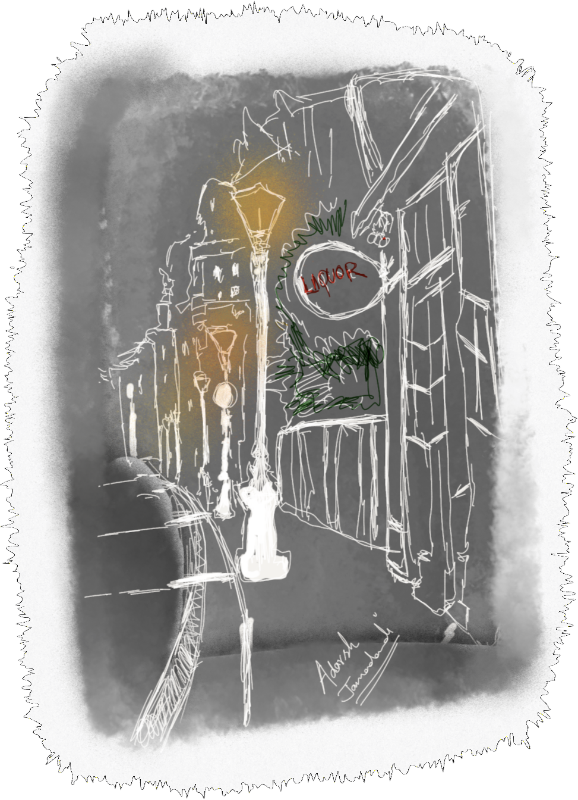

".......As Cluck and JónSmó were heading back to their spot... each in their own head thinking about stuff.. they were floored by a strange woman walking around.. or rather suspiciously and inextricably stochastic...possibly inebriated, near a closed shop that famously served drinks. Just as Cluck and JónSmó were even getting used to the idea of a
strange woman at the middle of nowhere wandering around... she had picked up something.. it was difficult to discern in the twilight toned sepia strewn dullard of a light emanating from a street light nearby what exactly it was... but it looked like something you would pick up as a specimen for studying Geology... the kind that wouldn’t float around like spaceships or fly like birds if you threw
them mid-air......
- The Merlot-Ponty Circus.
